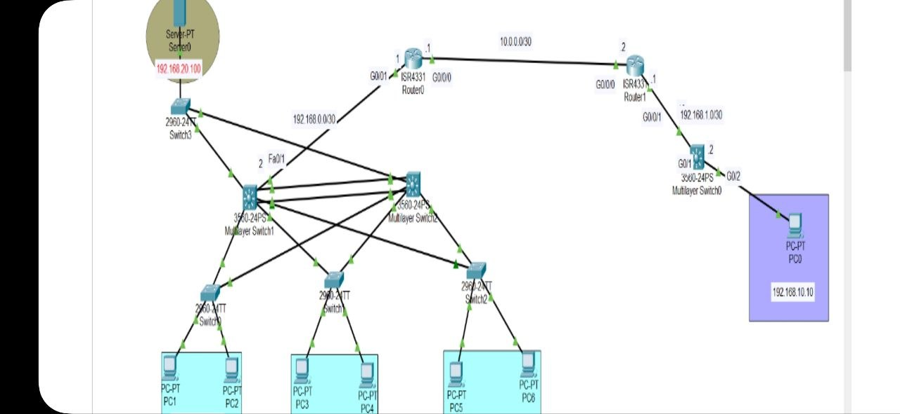
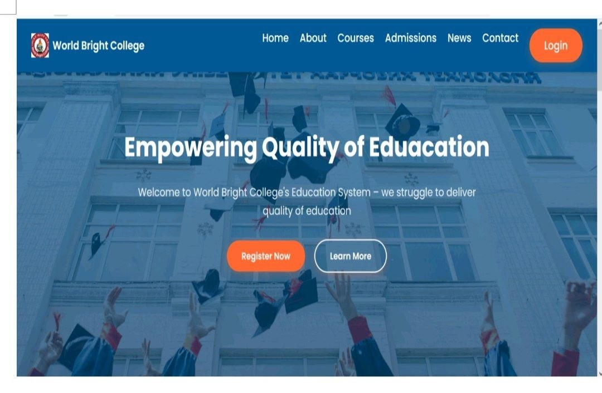

Technical skills
Tools and concepts I have studied and practiced.
OPEN TO ENTRY-LEVEL OPPORTUNITIES
HELLO, I'M
IT & Networking Enthusiast with a strong foundation in networking, database systems, and web technologies. Ready to turn technical knowledge into practical solutions.
01 / ABOUT
Building a strong foundation for a career in technology.
I am Eyerus Zewdu, an Information Technology graduate from Wachemo University with a strong interest in networking and database systems.
During my internship at IE Network Solutions, I gained practical experience using Cisco Packet Tracer and explored various networking concepts, with a focus on Cisco network design and configuration.
Serving as a student representative strengthened my leadership, teamwork, and communication skills. I am motivated, responsible, and adaptable, and I am eager to apply my knowledge in real-world IT environments, contribute to a professional IT team, and continue developing my technical skills.
Explore my experience ↗Wachemo University · 2026
Strong academic record
Configuration, troubleshooting, front-end
Leadership, communication, problem solving
02 / SKILLS
A mix of technical foundations and people skills.
Tools and concepts I have studied and practiced.
How I collaborate and approach challenges.
03 / SELECTED WORK
Academic and practical work that helped me connect concepts to real scenarios.

↗Designed a simulated multi-device network topology with routers, switches, end devices, and a server using Cisco Packet Tracer.

↗Academic final project focused on an online education website interface, presenting learning information and navigation for students.
Project descriptions are concise portfolio summaries. Add your repository link or more implementation details when available.
04 / EXPERIENCE
Academic leadership, technical practice, and customer support experience.
Addis Ababa, Ethiopia
Wachemo University · Hossana, Ethiopia
Hive Technology
Wachemo University · GPA 3.64
05 / CONTACT
I'm open to entry-level IT, networking, technical support, and web development opportunities. Feel free to connect with me.
Curious about technology.
Committed to learning.
Ready for the next challenge.